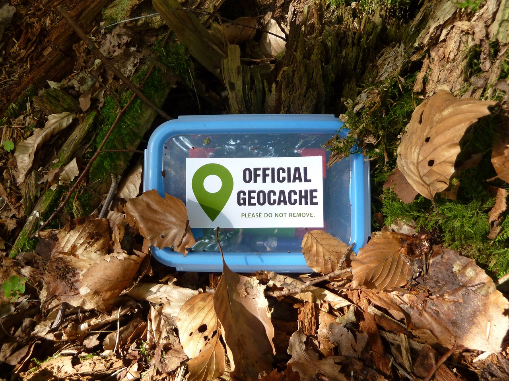

Welcome to the "adopt a geocache" System!
Discover the allure of geocaching: adopt hidden treasures with rich histories or share your own adventures by putting caches up for adoption!

Discover the allure of geocaching: adopt hidden treasures with rich histories or share your own adventures by putting caches up for adoption!
Explore all geocaches uploaded by the community.
Share your geocaching discoveries with the community.
Welcome to your account page!
Stay updated with the latest geocaching information.
Explore a nearby geocache that appeals to you. Copy the provided code
and visit the website mentioned in the description.
Input the code into the designated field and submit
an adoption request. Following this, the owner of the cache will receive a notification to approve your inquiry.
Once all steps are completed,
you should find the geocache listed as owned on your Geocaching.com profile.